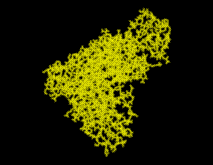
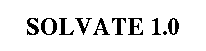
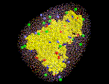

© 1996 Helmut Grubmüller
Theoretical Biophysics Group
Ludwig-Maximilians-Universität München, Germany
http://www.imo.physik.uni-muenchen.de/~grubi
email: Helmut.Grubmueller@Physik.uni-muenchen.de
Helmut Grubmueller
Wed Jun 19 19:00:00 MET DST 1996